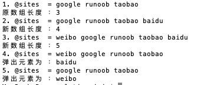

Perl 配列
Perl 配列はスカラー値を格納するリスト変数であり、変数は異なる型にすることができます。
配列変数は @ で始まります。配列要素へのアクセスは$ + 変数名 + [インデックス値]の形式で読み取ります。次に例を示します：
実例
プログラム内の $ 記号は \ でエスケープして、そのまま出力しています。
上記のプログラムを実行すると、出力結果は次のようになります：
$hits[0] = 25 $hits[1] = 30 $hits[2] = 40 $names[0] = google $names[1] = サンプル $names[2] = taobao
配列を作成
配列変数は@記号で始まり、要素は括弧内に置きます。また、qw配列の定義を開始します。
@array = (1, 2, 'Hello'); @array = qw/这是 一个 数组/;
2番目の配列は使用しますqw//演算子は、文字列リストを返し、配列要素はスペースで区切られます。もちろん、複数行を使用して配列を定義することもできます：
@days = qw/google taobao ... サンプル/;
インデックスを指定して配列に値を代入することもできます。次のようにします：
$array[0] = 'Monday'; ... $array[6] = 'Sunday';
配列要素へのアクセス
配列要素にアクセスするには、$ + 変数名 + [インデックス値]の形式で読み取ります。次に例を示します：
実例
上記のプログラムを実行すると、出力結果は次のようになります：
google taobao サンプル サンプル
配列のインデックス値は 0 から始まります。つまり、0 は最初の要素、1 は 2 番目の要素、というようになります。
負数は逆方向から読み取ります。-1 は最初の要素、-2 は 2 番目の要素です。
配列の連番
Perl はシーケンスで出力できる配列形式を提供しています。形式は開始値 + .. + 終了値、次に例を示します：
実例
上記のプログラムを実行すると、出力結果は次のようになります：
1 2 3 4 5 6 7 8 9 10 10 11 12 13 14 15 16 17 18 19 20 a b c d e f g h i j k l m n o p q r s t u v w x y z
配列のサイズ
配列のサイズは、配列のスカラーコンテキストによって決まります：
実例
上記のプログラムを実行すると、出力結果は次のようになります：
数组大小: 3
配列の長さは要素数ではなく、配列の物理的なサイズを返します。次の例を見てみましょう：
実例
上記のプログラムを実行すると、出力結果は次のようになります：
数组大小: 51 最大索引: 50
出力結果からわかるように、配列要素は 4 つだけですが、配列のサイズは 51 です。
配列要素の追加と削除
Perl は配列要素を追加および削除するための便利な関数をいくつか提供しています。
プログラミング経験がこれまでになければ、関数とは何かと疑問に思うかもしれません。実は、これまでに使用したprintは出力関数です。
次の表に、配列でよく使われる操作関数を示します：
| 番号 | 型と説明 |
|---|---|
| 1 | push @ARRAY, LIST
リストの値を配列の末尾に追加します。 |
| 2 | pop @ARRAY
配列の最後の値を削除します。 |
| 3 | shift @ARRAY
配列の最初の値を取り出して返します。配列のインデックス値も順に 1 つ減ります。 |
| 4 | unshift @ARRAY, LIST
リストを配列の先頭に置き、新しい配列の要素数を返します。 |
実例
上記のプログラムを実行すると、出力結果は次のようになります：

配列のスライス
配列をスライスして、スライス後の新しい配列を返すことができます：
実例
上記のプログラムを実行すると、出力結果は次のようになります：
weibo qq facebook
配列インデックスには有効なインデックス値を指定する必要があります。正数または負数を指定でき、各インデックス値はカンマで区切ります。
連続したインデックスの場合は、..範囲を指定するために使用できます：
実例
上記のプログラムを実行すると、出力結果は次のようになります：
weibo qq facebook
配列要素の置換
Perl で配列要素を置換するには splice() 関数を使用します。構文形式は次のとおりです：
splice @ARRAY, OFFSET [ , LENGTH [ , LIST ] ]
パラメータの説明：
- @ARRAY：置換する配列。
- OFFSET：開始位置。
- LENGTH：置換する要素の数。
- LIST：置換する要素のリスト。
次の例では、配列の 6 番目の要素から 5 つの要素を置換します：
実例
上記のプログラムを実行すると、出力結果は次のようになります：
替换前 - 1 2 3 4 5 6 7 8 9 10 11 12 13 14 15 16 17 18 19 20 替换后 - 1 2 3 4 5 21 22 23 24 25 11 12 13 14 15 16 17 18 19 20
文字列を配列に変換
Perl で文字列を配列に変換するには split() 関数を使用します。構文形式は次のとおりです：
split [ PATTERN [ , EXPR [ , LIMIT ] ] ]
パラメータの説明：
- PATTERN：区切り文字。デフォルトはスペースです。
- EXPR：指定する文字列。
- LIMIT：このパラメータを指定すると、その配列の要素数を返します。
実例
上記のプログラムを実行すると、出力結果は次のようになります：
o com weibo
配列を文字列に変換
Perl で配列を文字列に変換するには join() 関数を使用します。構文形式は次のとおりです：
join EXPR, LIST
パラメータの説明：
- EXPR：連結文字。
- LIST：リストまたは配列。
実例
上記のプログラムを実行すると、出力結果は次のようになります：
www-サンプル-com google,taobao,サンプル,weibo
配列のソート
Perl で配列をソートするには sort() 関数を使用します。構文形式は次のとおりです：
sort [ SUBROUTINE ] LIST
パラメータの説明：
- SUBROUTINE：規則を指定します。
- LIST：リストまたは配列。
実例
上記のプログラムを実行すると、出力結果は次のようになります：
排序前: google taobao サンプル facebook 排序后: facebook google サンプル taobao
注意：配列のソートは ASCII コード値に基づいて行われます。したがって、配列をソートする際は、各要素を事前に小文字に変換してからソートするのが最善です。
特殊変数: $[
特殊変数$[は配列の最初のインデックス値を表し、通常は 0 です。もし$[を 1 に設定すると、配列の最初のインデックス値は 1、2 番目は 2、以降も同様になります。例：
実例
上記のプログラムを実行すると、出力結果は次のようになります：
网站: google taobao サンプル facebook @sites[1]: google @sites[2]: taobao
通常、特殊変数を使用することはお勧めしません。$[新しいバージョンの Perl では、この変数は廃止されています。
配列の結合
配列の要素はカンマで区切られます。カンマを使って配列を結合することもできます。次のようになります：
実例
上記のプログラムを実行すると、出力結果は次のようになります：
numbers = 1 3 4 5 6
配列の中に複数の配列を埋め込み、メインの配列に結合することもできます：
実例
上記のプログラムを実行すると、出力結果は次のようになります。
numbers = 1 3 5 2 4 6
リストから要素を選択
リストは配列として使用できます。リストの後にインデックス値を指定すると、指定した要素を読み取ることができます。次のようになります。
実例
上記のプログラムを実行すると、出力結果は次のようになります。
var 的值为 = 1
同様に、配列では次の構文を使用して..指定された範囲の要素を読み取ることができます：
実例
上記のプログラムを実行すると、出力結果は次のようになります。
list 的值 = 4 3 2その他の拡張